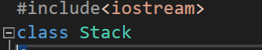
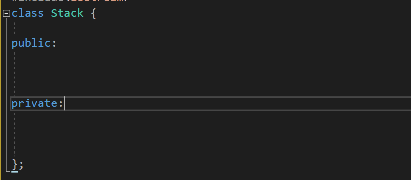
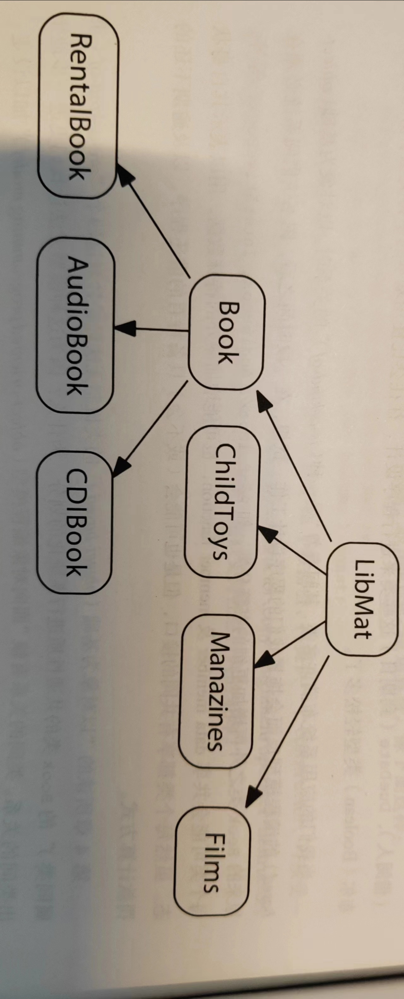
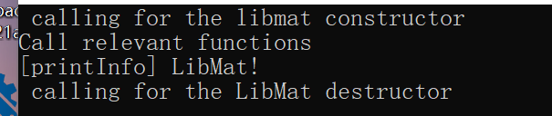
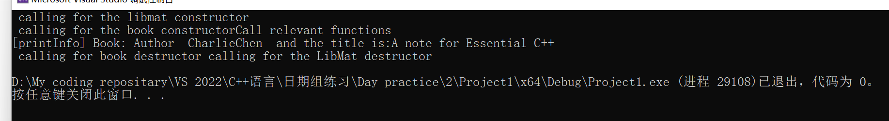

CPP_ExtensiveReadingNotes-1-EssentialCPP
C++基础编程
下面，我们开始正式的入门Ｃ++这个语言，通过一些简单的分析来了解一些简单的概念！我们将会在这些sections中认识
基本的数据类型：不二之，自负，证书，浮点数等概念
还要认识算术运算符，关系运算符和逻辑运算符，用在操作上树基础数据类型。这些运算符包括诸如+ ,==, <=等，还会有赋值，也包括Ｃ/Ｃ++的++自增运算，条件运算（？：）和复合赋值运算（+=）
一些基本结构语句，比如说ifwhile等来改变程序的流程
一些复合类型、比如说指针和数组。
一套标准而又通用的抽象化库，比如字符串（string）和向量(vector)
1.1简单程序的书写
下面开始书写简单的程序，我们的要求是将一小段信息发送到用户的终端，是请求用户输入一小段自己的姓名，程序读取后用这个姓名来跟用户打招呼。
在Ｃ/C++中，程序是从一个叫做main()的地方开始入手执行程序的，格式如下：
int main()
{
// this is he place you input the code
} int是Ｃ++程序的一个关键字，什么是关键字呢？就是程序语言预先定义好了的具有特殊含义的名称。言之：int是用来表示内置的数据类型的，它表明这一个整形。
函数是一块独立的程序代码序列，main函数返回一个整形，事实上，它的逻辑含义正式说明程序是否正确允许运行，原则上正确运行返回0，否则返回其他值。这表达出程序产生了其他错误需要处理！
当然，其他函数的名称可以由程序员自己选择，当然，最好名称是让人一下子就明白这是要干什么的！比如对于一个实现了排序的函数，你给他起名字叫sort()也比叫他q()强的多
函数的参数列表，是函数执行时候可能用到的参数，我们把它放在（）里面，比如：void sort(int* arr, unsigned int arrLen)，而当你直接书写（）表明函数不接受参数！
随后，当我们制定完函数的返回类型，参数列表函数名称之后，就用一个大括号将实现代码阔起来{}
// 是C/C++的注释符号！
下面我们开始完成任务：第一个工作就是向用户给出提示输入！事实上，在Ｃ++中，我们是调用面对对象的类层次体系来完成这个工作的
所谓的类就是用户自己定义的数据类型，在Ｃ++中这个关键字就是class。我们使用基本的数据类型将他们组合起来构成新的自定义的对象！比如说：我们选择三个浮点型来表现一个点的空间坐标！等等。
class给我们了抽象事物的能力！虽然说还是没到该使用class的时候，但还是先要声明一下，我妈实现一个class类即要声明又要实现！它们要被放在不同的文件下。想要使用这些类呢，就要引用他们的声明文件，也就是头文件！标准格式如下：
#include<iostream> 这里，有标准库已经封装好C++了的控制台输出对象：cout，这样的使用，就可以把我们想要输入的东西输出到控制台上：
cout<< “offer me your name please!”; 这就是一条单独的语句。如果我们书写这样的代码，C++用户就会看见一条信息了！但是先别急，还没讲完，这个时候运行会报错的。
我们要找一个东西来储存用户的输入，不错，选取标准库的string 是一个汗不错的主意。声明的方式可以类比：
string usr_name;但是止步于此系统不认识你的string是什么，于是声明一下头文件就好了：
#include<string> 以后运用cin来输入东西读入进程序就好了！
cin >> usr_name; 而在我们读取成功之后，我们利用收集到的信息，来完成打招呼：
cout<<“hello,”
<<usr_name
<<“ nice to meet you!”
<<“\n”; 是的，我们的Cout可以这样使用来达到连续输出的效果！
下面我们组合起来，完成我们第一个大程序：
#include<iostream>
#include<string>
using namespace std; // using in declaring the functions that belongs to which!
int main()
{
string usr_namel;
cout << “sbmit your first name”;
cin >> usr_name;
cout << “ hello !”
<< usr_name
<< “nice to meet you\n”; ,// 表示换行
return 0;
} 我们的程序会在后面很成功的完成我们的任务。
程序中间的有一行，是我们需要留心的，那就是C++
using namespace std;
这一行程序将标准库里的函数所在的空间暴露给我们的程序，意味着我们不再需要指明这是哪里的某函数便可以直接使用之！
对象的定义和初始化问题
下面想要集中说明的是关于对象初始化和定义的问题！
这是一块内存地址对于我们程序员的抽象！换而言之，我们给这块内存地址取一个名字，映射这块内存地址，赋予它数据类型。注意的是名称是任何字母，数字和下划线_的若干组合！大小写是区分的！！！对象名称也不可以由名字打头！比如说1_User是一个不合法的名称。
每个对象都有自己的数据类型，他们决定了这个对象有多大，范围如何。一个标准的声明对象的格式是：
int usr_val = 10; 也就是
typename varName = Val; 在这行语句里，我们实际上做了两件事情：对象的定义和初始化，我们都做了！定义只是声明了这个变量是什么，赋值，也就是初始化的具体行为，是用assignment这个行为，使用= 这个运算符完成的。
简单的对象只需要一次复制就可以有效的完成。但是对于复杂的对象，也就是比如说复数：学过几本数学的都知道，复数是由实数和虚数构成的。那么，这样的行为大多数情况下就是未定义的！
complex anError = 1; // Error ,this is a compound variable那，我们就需要使用这样的方式，比如说：
Complex ok(10,20);标准库是怎么说的呢？标准库是使用了模版来进行编程的：
#include<complex>C++
Complex<double> aComplex(10,29); 好好好，那这个
当然，对于一些常量，我们使用const修饰符来让编译器知道这个变量是不允许修改的！
const typeName varName = initialVal;书写表达式
下面我们来开始另一个Ｃ++编程的主要活动，也就是书写表达式指挥编译器，从而间接的指挥CPU等各个硬件来完成我们希望完成的工作。事实上，我们刚刚阐述的赋值就是一种赋值表达式。
表达式可以是简单的：
i += 2； 也可以是复杂的，比如说下面的式子实现了自动检测行数来实现自动换行的语句
cout << textInLine << (cnt % 8 ? ‘’ : ‘\n’ ); %这个运算符是取余操作符，同时，还有一个崭新的三目操作符
EXPR1 ? EXPR2 : EXPR3; 这是什么意思呢？我换一下：你吃饭了吗？ 吃了：没吃也就是说，只有对着EXPR1 求值返回的是真，才会执行EXPR2 ，否则就是执行3
表达式的核心是运算符，对于赋值行为我们常常会遇到自己操作自己的情况。Ｃ++使用+=，++ 等行为来简化我们的自增行为。
cnt += 2; 特别的 ++ 和 — 是递增递减运算符，专门的，有前置的与后置的运算符。
前置是先加后用，也就是说
// demo
int val = 10;
cout << ++val;
// On console , we see the res is 11
cout << val++;
// On console , we see the res is 11 除了赋值运算符，我们还有关系运算符。这里有== != < > <= >= 这个关系式返回的是布尔值。这样的特性使之可以用在if 等结构语句。
if( BOOL_EXPR){
// the statements that executing only when EXPR is true.
}一个经典的应用我想就是用户反馈判断的代码了！
if(usr_choice == ‘Y’){
usr_more = false;
}
else{
usr_more = true;
}值的我们反复警示的是！很多人上手就会写好玩的
if(choice = ‘Y’) 这样就是一个赋值行为，表达式返回赋值的结果，也就是说，除非是赋值0，否则这个if判断将会是永远成立的！而且choice的值将会被赋值‘Y’，灾难！
在if中的表达式可以使用&& || !等运算符来避免不必要的嵌套if从句，后者对于阅读代码的人来讲是一个灾难。
if(password && validate( password) && (get_account = retrieve_account_info(password) ) )如上，我们首先看password是不是false，是的话，后面的表达式不执行直接跳过！
运算符优先级
我们运算符也有优先级的，运算符从上到下运算符优先级逐步降低：
NOT ！
算术运算符 * / %
算术运算符 + -
关系运算符 < > <= >=
关系运算符 == !=
逻辑运算符AND
逻辑运算符 OR
赋值运算符 =
因此，当我们试图判断 i可不可以被2惩整除的时候，不可以写作：
if(!i %2)
因为！i会被先计算，所以，这样才是合适的：
if（!(i%2)）
条件语句和循环语句
下面要讲述简单的循环语句和条件语句。
条件语句很简单，就是if ,else ,else if三件套，这个我们不再多说，没有新鲜的东西！
但是值得一提的是switch语句！我们如果发现可以使用一系列的整数来代替选择的话就不妨使用switch语句，其格式是这样的：
switch(num){
case 1:
cout << “this is the case 1”;break; // break is using to jump out the structure .
case 2:
cout << “this is the case 2”;break;
default:
break;
}循环语句
我们如果希望程序在某一个条件之下一直做一些什么事情，那while for do{}while什么的最合适了。
while(get_Correct)
{
get_Correct = usrInput();
}while循环表达式会在开始执行循环体的时候先计算（）内部的表达式是不是真，若果是真循环体执行一直到表达式循环为假，这就强迫我们提供循环的出口！
当然，有的时候可以用break 直接干掉循环，或者是使用 continue结束当前循环。
比如说
while(cin >> word)
{
if(word.size() < min_size){
continue; // 只是不再收录小于 min 长度的字符串
}
if(word.size() >= max_size){
break; // 则是遇到大于最大长度的直接跳出循环继续执行其他的程序
}
Proceed_text(word)
}
使用标准库的array 和vector
我们的程序经常需要存储一系列的元素，这需要我们使用数组来完成这个工作，在Ｃ++中，前辈们已经帮我们封装好了 array 和 vector使用。
想要使用之，就必须首先引用头文件
#include<array>
#include<vector>在初始化的时候，就需要注意到我们首先要指明存什么
int sq_size = 10;
vector<int> pell_seq(sq_size);你瞧，这样就好了，int指明了我们的动态数组（vector是动态数组）存储整形的，而pell_seq 是这个动态数组的名字，（）里面提供的是初始化时提供的参数。
对于数组的赋值，我们使用[]，里头提供下标来作为在数组哪里赋值的依据。
这里为了方便使用for语句来赋值
for(init-statement; condition_of_continueForLoop; expression)
{
}
for(int i = 0; i < 10; i++)
{
pell_seq[i] = i;
}你看这样就好了。至于如何打印我们将在后面学习！
array是类似的，不过，array是静态的数组，不支持动态扩展，这是我们需要注意的。
指针小论
我们可以通过被告知元素在哪里而不是他叫什么来访问元素。这正是指针的用处！声明一个指针，赋予其地址，也就是他在计算机内存的何处。
int* pVal = &Val;使用这个方法拿到一个元素的地址，这下，指针就像钥匙一般找到元素本身来对其本身进行操作了：
if（*pVal != 1024）
{
*pVal = 1024;
}当我们不在声明中对指针变量使用*时，正是解引用的意思。
我们需要指出的是，在指针本身，也可以存在：指针不指向任何东西，在习惯上赋值为NULL，当然在后面的Ｃ++中又使用nullptr作为不指向任何东西的指针。
vector<int>* pVec = nullptr;
pVec = new vector<int>(10);同时，这也提醒我们，在我们通过指针来对对象进行若干操作的时候，就需要首先了解一下这个指针是不是空：
if(pVec && *pVec.empty()) // pVec 有效吗 && pVec指向的对象元素是不是空 文件流操作
操纵文件，对文件输入输出东西在Ｃ++中十分常见！
来看一个DEMO。
#include<fstream>
int main()
{
ofstream outfile(“something.txt”);
} 这行代码的作用效果是：打开一个文件，它是something.txt 如果文件并不存在，那我们就创建一个叫something的文本文件。并且让他处于打开的状态，从而程序可以对之输入。
但是，如我们每次都这样书写，带来的作用是新的会覆盖旧的书写，如果我们不想这样，那就提供一个参数： ios_base::app表明我们现在对文件施以追加输入。现在，可以通过outfile这个对象来给文件重定向内容了！
if( !outfile ){
cerr << “Sadly unable to open and write something int the file :(”;
}
outfile << usr_name << “is ” << someString << endl;文件的输入到程序中至可读，我们使用的是ifstream, 定义个ifstream 类的对象
ifstream infile(“seq.txt”);
if(!infile)
{
cerr << “Oops, seemingly you are new here…”;
// do others
}
while(infile >> name){
cout << name << endl;
} 面向过程的函数编程
为了更好的开发更大的程序，我们往往采用函数来完成我们的编程任务，从而提高代码的复用性。
如何编写一个函数
每一个函数都必须由下面四个部分构成：
1）返回类型 returnType : 简单的讲就是函数返回啥的问题
2）函数名： 函数的命名也有讲究，如何给函数命名是一门艺术，简单的讲：使用名称来告诉用户程序员这个函数的功能！
3）参数列表： 函数需要什么？这就是参数列表的用处了，参数列表列出了函数需要什么！
4）函数体： 函数是怎么实现的？结构如何，从这里看
returnType funcName(typePackage parameters){
// do things here
} 比如说，我们对一个vector里的元素寻求最大值
long findMax(vector<int> vec){
long curMax = vec[0];
for(auto i = vec.begin(); i != vec.end(); i++){
if(*i > curMax){
curMax = *i;
}
}
return curMax;// return the val back in here.
} 我们就这样把函数抽象做子程序了！在这些子程序中，一个重要的issue就是异常处理，这里是一个简单的demo
我们来看这个函数
long getElemFromVector(vector<int> vector, int pos)
{
if(pos < 0 || pos > vector.size()){
exit( -1 );
}
return vector[pos];
} 很显然这是一个返回第pos位置上的元素的函数。那哪里是异常处理被？就是
if(pos < 0 || pos > vector.size()){
exit( -1 );// should include the <cstdlib> to use the functions
}传参方法：passByReference
先别说！看一个这个玩意：
void swapInt(int a, int b){
int temp = b
b = a;
a = temp;
} 函数可以成功交换两数嘛，答案是否定的：
int main()
{
int a = 10;
int b =20;
swap(a,b);
cout << a <<" " << b;
}>> a.out
>> 10 20 // sadly make no swap 这是因为调用函数的时候，只是把a,b的拷贝传入到函数的内部而不是他们本身，这样就意味着非常坏的事情：做无用功，玩弄形参而已，现在我们使用 reference 这个C++概念 。实际上，当我们使用引用的时候就意味着我们是传入它的地址：
// new type of coding
void swap(int& a, int& b){
int temp = a;
a = b;
b = temp;
} 我们为什么传参传引用呢？原因是简单的：对于值传递，编译器必须复制传入对象，有时，这样的工作被证明是复杂耗时的。并不利于我们的程序性能的提升。其次，使用引用传递使的函数的作用可以有效地反馈至程序！当然，那为什么不用指针呢？区别在于，可以简单的理解为引用是特殊的常指针。而且在写法上更为简便。
作用域
我们下面要说的是作用域的问题。我们为什么函数结束后一些临时变量会被销毁？就是因为我们的变量到达了他们的生命周期而被释放。一个变量的生命周期正是从他被创造开始到他被释放的实践间隔。这就是为什么传回函数临时变量的地址是非法的。因为我们拿到的是已经还给操作系统的内存——换而言之，我们在非法访问！于是，如果我们真的想返回函数的什么东西，应当使用值返回（return by val），这是因为函数此时返回了变量的副本。抑或是选择在内存中开辟！也就是说：在堆上开辟数据，他们会存留到程序结束为止，抑或是选择程序员自动释放。
动态内存管理
一个big issue! 我们需要在堆上放置数据，就很有必要使用操作符 new.
Type* pobj = new Type(Initial Val)int* pInt = new int(1024); 使用delete来删除我们在堆上开辟的内存！
delete pobj 如果我们开辟的是一个数组，那就记得：
delete[] pArray提供默认的参数值
我们有时候一些函数的参数总是使用一个默认的值，只在另一个时候才会使用别的值，那我们可不可以使用默认的值来减轻我们的开发负担呢？答案是可以的。
现在我们来考虑使用冒泡排序，在默认的情况下我们是要向控制台输出。但是有时候还是会向其他地方输出。怎么办？如何有效的设计这个函数？
void bubbleSort(vector<int> &vec, ofstream *ofil = 0){
for(int i = 0; i < vec.size(); i++){
for(int j = i+1 ; j < vec.size(); j++){
if(vec[i] > vec[j]){
if(ofil != 0){
(*ofil)<< "About to call the debug";
}
swap(vec[i],vec[j],ofil);
}
}
}
} 注意到我们为了提供默认使之给ofil对象使用的是指针传递。这是因为我们如果是使用的引用传递，就意味着我们无法置0. 不太好设置初始值！
关于默认值，值得注意的是有两个基本的注意点：首先是默认值必须放在最右边，不可以插入中间指定默认值而后面不指定
int a(int a = 5, int b);// invalid! 注意还有，必须只能指定一次默认值！不可以指定两次！
int a(int a, int b = 2);
int a(int a, int b = 3);//编译器不知道调用哪一个！使用局部静态变量
一些常用的东西，可以存在静态区，我们使用的是static关键字完成这项工作的！
int someFunc(...){
static int a = 10;//当这里被定义了过后。。。下一次再次调用直接取先前被创造出的地方
a++;//第一次调11 第二次调用12.。。以此类推
}可以考虑inline
对于一些频繁调用的函数，我们加上inline声明。编译器调用的时候选择在调用点处用一份函数代码副本代替。也就是说：
int f1(){
...
f2();
...
f3();
} 现在，本来是编译器要跳转三次到其他函数，现在加上inline声明，f2,f3的代码直接移动到f1内部，编译器之跳转到f1工作完毕再跳出！我们由此获得了性能提升。
但是这只是一种请求，编译器会根据自己运行的情况进行判断！一般而言，我们倾向于选择体积小，常被调用和从事工作不复杂的函数加上inline。
提供重载函数
有时候，我们的函数只是因为工作相同，但是参数不同而不得不命名不同的函数。这不方便我们的工作！于是我们选择使用重载函数来完成我们的操作
void display(string a);
void display(int a);
//... 注意到参数类型要不同！
定义并使用模板
但是重载函数面对太多不同的类型，也不能写那么多重载函数，怎么办呢？使用模板就好了！
模板的格式定义是： template< typename name>
template<typename nameType>
void display(nameType msg); 当我们传一个string的时候，编译器把这里解释成string，如果传入一个int 就是int。
使用头文件
我们可以分离 声明——实现这个抽象工作，只需要我们把声明放到头文件就可以了！
#include<stdio.h>
#include"MyFile.h" 简单来讲，<> 和“”的区别在于。 尖括号包下的文件被认为是标准的或者是项目专属的文件，编译器回去默认磁盘项目里去找，而“”被认为是用户头文件，编译器从当下的文件目录开始找！
泛型编程风格
STL,就是泛型编程的良好体现,它由两个基本组件组成.1是容器, 2是泛型算法.
从指针运算讲起
我们现在考虑从一个容器里找到一个元素, 比如说在一个vector容器中找到我们想要的整数: int. 算法是轻而易举就可以写出来的:
int* find(const vector<int> &r_vec,int& val){
for(int i = 0 ; i < r_vec.size();i++){
if(vec[i] == value){
return &vec[i];
}
}
return nullptr;// same as NULL in C
} 如果,我们的容器时任何什么东西又该怎么办呢?
template<typename elem>=
elem* find(const vector<elem>& r_vec, elem& val)
{
for(int i = 0 ; i < r_vec.size();i++){
if(vec[i] == value){// 当然要求elem存在 equal 方法或者是重载了 ==
return &vec[i];
}
}
} 但是,貌似若我们不是在vector里找,而是list里找,那又该怎么办呢. 我们没办法对list找下标的(list 是离散容器)
采用纯指针访问
anyway, 我们想一下啊: 本质上[]就是一个语法糖,对于一个连续容器的, 本质上讲:
array[i] <----------> (array+i) 这样就启发我们这样书写当传入类型是array类型的时候(经典数组)
elem* find(elem* begin,int elemSize,elem& befoundElem){
if(begin && elemSize < 0){
return nullptr;
}
for(int i = 0; i < size; i++,begin++){
if(*begin == beFoundElem){
return begin;
}
}
return nullptr;
} 嗯,但是传入要访问多少个,不如试试全部传入指针?
elem* find(elem* begin,elem* end,elem& befoundElem){
if(begin && elemSize < 0){
return nullptr;
}
for(; begin !- end; i++,begin++){
if(*begin == beFoundElem){
return begin;
}
}
return nullptr;
} 现在我们发现,我们无意的抽象出来一个对象, 什么意思?我们抽象出来一个指针类型,使之可以有 ++ — * ->等若干行为,我们的容器只需要提供begin 和 end就可以使用最广泛的泛型算法!这就是 iterator迭代器的来源!
泛型指针:迭代器
vector<string> :: iterator IT = svec.begin() 就是一个指针指向了begin!如果我们希望是一个常指针帮助我们做事情,那使用const_iterator会好很多!
为了可以让iterator正常工作,有必要指出与实现:
1 -> equlity( == ) and inequlity ( != )
2 -> assignment(= 赋值)
3. empty(空)
4. size(衡量元素大小)
5.clear()删除初始化一个容器的基本五大接口
- 初始化默认的空容器
- 产生特定的容器,并且所有的成员都要有默认的初始值
- 产生特定大小的容器,并为之赋初始值
- 通过iterator给与值
- 复制构造
泛型编程风格
STL,就是泛型编程的良好体现,它由两个基本组件组成.1是容器, 2是泛型算法.
从指针运算讲起
我们现在考虑从一个容器里找到一个元素, 比如说在一个vector容器中找到我们想要的整数: int. 算法是轻而易举就可以写出来的:
int* find(const vector<int> &r_vec,int& val){
for(int i = 0 ; i < r_vec.size();i++){
if(vec[i] == value){
return &vec[i];
}
}
return nullptr;// same as NULL in C
} 如果,我们的容器时任何什么东西又该怎么办呢?
template<typename elem>=
elem* find(const vector<elem>& r_vec, elem& val)
{
for(int i = 0 ; i < r_vec.size();i++){
if(vec[i] == value){// 当然要求elem存在 equal 方法或者是重载了 ==
return &vec[i];
}
}
} 但是,貌似若我们不是在vector里找,而是list里找,那又该怎么办呢. 我们没办法对list找下标的(list 是离散容器)
采用纯指针访问
anyway, 我们想一下啊: 本质上[]就是一个语法糖,对于一个连续容器的, 本质上讲:
array[i] <----------> (array+i) 这样就启发我们这样书写当传入类型是array类型的时候(经典数组)
elem* find(elem* begin,int elemSize,elem& befoundElem){
if(begin && elemSize < 0){
return nullptr;
}
for(int i = 0; i < size; i++,begin++){
if(*begin == beFoundElem){
return begin;
}
}
return nullptr;
} 嗯,但是传入要访问多少个,不如试试全部传入指针?
elem* find(elem* begin,elem* end,elem& befoundElem){
if(begin && elemSize < 0){
return nullptr;
}
for(; begin !- end; i++,begin++){
if(*begin == beFoundElem){
return begin;
}
}
return nullptr;
} 现在我们发现,我们无意的抽象出来一个对象, 什么意思?我们抽象出来一个指针类型,使之可以有 ++ — * ->等若干行为,我们的容器只需要提供begin 和 end就可以使用最广泛的泛型算法!这就是 iterator迭代器的来源!
泛型指针:迭代器
vector<string> :: iterator IT = svec.begin() 就是一个指针指向了begin!如果我们希望是一个常指针帮助我们做事情,那使用const_iterator会好很多!
为了可以让iterator正常工作,有必要指出与实现:
1 -> equlity( == ) and inequlity ( != )
2 -> assignment(= 赋值)
3. empty(空)
4. size(衡量元素大小)
5.clear()删除初始化一个容器的基本五大接口
- 初始化默认的空容器
- 产生特定的容器,并且所有的成员都要有默认的初始值
- 产生特定大小的容器,并为之赋初始值
- 通过iterator给与值
- 复制构造
基于对象的编程风格
我们在先前已经体验过class了，就像vector一样。
首先，我们知道：类必须要声明！
#include<string>
string pooh[4] ={
"winnie",
"robin",
"eeyole",
"piglet"
}; class 名称将会被视作类型（type）名称，就像内置类型int, double一样。 class object的初始化做法有很多种！
#include<vector>
string path("dummy");
vector<string> svc1(4);
vector<string> svc2(4,"dummy");
vector<string> svc3(pooh,pooh+4); 每个class都会提供一组操作数，让我们可以作用之在object.比如说，我们提供函数func(),
class sth;
sth Sth;
Sth.func(obj object) 一般的, class有三个部分组成，我更愿意说：class里的成员是分为三个类别的：private的，protected的，和 public 的。Public区域下的成员和对象都是对外开放。Private则只能在类内访问！举个例子：
class aClass
{
public:
int pub_Val; // can be used in public space
int* returnAIntVal();{
return new int(10); // can be used in public space
}
int returnPri_Val(){
return pri_Val; // valid
};
private:
int pri_Val;
int* returnSomethong();{
return new int(11);
}
}
int main(){
aClass sth;
int a = sth.pub_Val; // valid
int* pa = sth.returnPri_Val();// valid
int priAVal = sth.rereturnPri_Val();
// Also valid! This is the Interface of private.
// followings are invalid
int wrongA = sth.pri_Val; // Invalid!!! cannot visit private
int* wrongB = sth.returnSomethong();// Invalid!!! cannot visit private
}
实现一个Class
我们的main topic 在使用C++手写一个stack！关键在于怎么写

这是一个声明！

这是一个Stack的标准声明与定义。
下面，编写接口：
#include<iostream>
#include<string>
#include<vector>
using namespace std;
class Stack
{
public:
bool push(const string& pString);
bool pop(string& pString);
bool peek(string& pString);
bool isEmpty();
bool isFull();
int size() { return _stack.size(); };
private:
vector<string> _stack;
};
void fill_stack(Stack& stack, istream& is = cin) {
string str;
while (is >> str && !stack.isFull()) {
stack.push(str);
}
cout << "Read in" << stack.size() << "elements\n";
}
但是接口没有实现！那怎么办！
我们是这样书写类内的成员函数的：只需要声明这是哪个类的函数。。。
bool Stack::pop(string& elem) {
if (empty()) {
return false;
}
elem = _stack.back();
_stack.pop_back();
return true;
}
inline bool Stack::empty() {
return this->_stack.empty();
} 类和其成员函数的定义和实现是，应当放在头文件里去。
构造函数和析构函数
我们先不说的这样抽象！转向直接阐述：构造函数是一种初始化函数，同
int a = new int; 是一回事。但是由于我们的类是若干基础变量组合产生。有必要使用函数来包装！比如说：
class Tri{
private:
m_Val1;
m_Val2;
}Tri::Tri(){
m_Val1 = 10;
m_Val2 = 20;
} 上面的函数就是一个构造函数，我们初始化了类内的变量！
构造函数是可以重载的！我们可以重载构造函数，使之给用户提供不同的初始化方式。
Tri::Tri(int mVal1, int mVal2){
m_Val1 = mVal1;
m_Val2 = mVal2;
}初始化列表
我们对于一些变量可以使之直接在表内初始化
Tri::Tri(int mVal1, int mVal2): m_Val1(mVal1),m_Val2(mVal2){
// ... other things
} 我们会在程序的结尾调用析构器。事实上，在上面的函数中没有必须调用析构器！因为对象都是简单对象，直接释放即可。这就说明一件事情：对于简单的类和简单的尚未在堆上开辟内存的类，可以直接调用析构器从而实现内存释放
逐一初始化的
下面想要说的是浅拷贝的知识点：这是在我们使用等号赋值的一种较为常见的错误
对于一些简单的类，那些成员不在堆上的类，我们当然可以选择浅拷贝来解决问题：
class Easy{
public:
anSample(int val1, int val2);
int m_Val1;
int m_Val2;
//...
} 这样的行为被称为浅拷贝：
Easy anSample(1, 2);// call the anSample(int,int)
Easy aCopy = anSample; 本质上，我们实际上调用了这样一个被编译器隐藏起来的函数：
Easy& operator=(Easy& beCopied){
this->m_Val1 = beCopied->m_Val1;
this->m_Val2 = beCopied->m_Val2;
} 那也就意味着，假使我们这样操作：
class Diff{
public:
diff(int val){
this->m_Val1 = val;
this->m_inHeapArray = new int[10];
}
int m_Val1;
int* m_inHeapArray;
} 而这样的话，就意味着我们在赋值的时候
Diff dif(10);
Diff copy = dif; 调用的是：
Easy& operator=(Easy& beCopied){
this->m_Val1 = beCopied->m_Val1;
this->m_inHeapArray = beCopied->m_inHeapArray;
} 这分明是开了两个指针指向同一块内存，这就意味着，只需要我们的被拷贝对象或者是拷贝对象被调用了正确的（就是说我们的程序员正确的释放了内存）析构函数，那么，当程序结束或者是准备析构另一个对象的时候，我们就会拿起来它，释放（危险行为），但是先前这块地方已经被释放过了！坏了，这下寄了，程序就会崩溃！
解决办法是：自己老老实实重写，比如说：
Diff& operator=(Diff& beCopied){
this->m_Val1 = beCopied->m_Val1;
this->m_inHeapArray = new int[10];
memcpy(this->m_inHeapArray,beCopied->m_inHeapArray,10*sizeof(int));
return *this;
}TIPS：小心坑
由于引用的出现，我们赋值方式很多，但是这样的等号赋值，编译器调用哪一个呢？
Diff copy = sample; // 调用了默认的还是自己重载的？
//
Diff copy2;
copy2 = sample; // sample is already inited 答案是，上面的调用的是默认的拷贝构造函数（构！造！），下面调用的是自己手动重载的函数。这是等号赋值函数。这是我们需要注意的！！！
下面供一个小小的DEMO给大伙看看：
#include<iostream>
#include<cstdlib>
class Diff {
public:
Diff();
Diff(int val);
~Diff();
Diff& operator=(Diff& dif);
void showDetail()const;
private:
int m_Val;
int* m_inHeap;
};
Diff::Diff() {
this->m_Val = 0;
this->m_inHeap = NULL;
}
Diff::Diff(int val) {
this->m_Val = val;
this->m_inHeap = new int[10];
}
Diff::~Diff() {
delete[] this->m_inHeap;
std::cout << "Finished calling the destructor!" << '\n';
}
Diff& Diff::operator=(Diff& dif) {
this->m_Val = dif.m_Val;
this->m_inHeap = new int[10];
memcpy(this->m_inHeap, dif.m_inHeap, 10 * sizeof(int));
return *this;
}
void Diff::showDetail()const {
std::cout << "the Val >" << this->m_Val << " " \
<< " the addr name :>" << this->m_inHeap << " " << std::endl;
}
int main() {
Diff sample(10);
Diff copy;
copy = sample;
copy.showDetail();
sample.showDetail();
}mutable 和 const
查阅你的英文字典，哈哈一笑，一个是可变的，一个不是可变。
我们来看一个Demo函数：
#include<iostream>
class wrapArray {
public:
wrapArray();
wrapArray(size_t size);
inline size_t getSize() const { return this->arrSize; };
inline int* getAddr(int* emptySpace = nullptr)const { int* space = new int[arrSize]; memcpy(space, this->arr, sizeof(int) * arrSize); return space; };
void simpleInitArr();
long addSum()const;
private:
int* arr;
size_t arrSize;
};
wrapArray::wrapArray() {
this->arrSize = 0;
this->arr = nullptr;
}
wrapArray::wrapArray(size_t size) {
this->arrSize = size;
this->arr = new int[size];
}
void wrapArray::simpleInitArr() {
for (int i = 0; i < this->arrSize; i++) {
this->arr[i] = i;
}
return;
}
long wrapArray::addSum()const {
long sum = 0;
int* arr = getAddr();
for (auto i = 0; i < getSize(); i++) {
sum += arr[i];
}
return sum;
} 类的成员函数后面加 const，表明这个函数不会对这个类对象的 数据成员（准确地说是非静态数据成员）作任何改变 。 在设计类的时候，一个原则就是对于不改变数据成员的成员函数都要在后面加 const，而对于改变数据成员的成员函数不能加 const。
可以看到上面的函数就是这样做的！
但是注意到！一些函数虽然是 const 的，向编译器承诺不会改变成员的值的。但是他们有可能返回一个 non-const接口，对于那些拿起这些接口的对象，他们是可以改变对象的值的！这是十分不好的！最好的办法是设计一个non-const类型从而分别处理比较好
那mutable呢？他们用在这样希望其他不变而就这个改变的变量上，比如说：
#include <iostream>
class Person {
public:
Person();
~Person();
int getAge() const; /*调用方法*/
int getCallingTimes() const; /*获取上面的getAge()方法被调用了多少次*/
private:
int age;
char* name;
float score;
mutable int m_nums; /*用于统计次数*/
};
Person::Person()
{
m_nums = 0;
}
Person::~Person() {}
int Person::getAge() const
{
std::cout << "Calling the method" << std::endl;
m_nums++; // 你看这个就突破了const 的修饰
//age = 4; 仍然无法修改该成员变量
return age;
}
int Person::getCallingTimes()const
{
return m_nums;
}
int main()
{
Person* person = new Person();
for (int i = 0; i < 10; i++) {
person->getAge();
}
std::cout << "getAge()方法被调用了" << person->getCallingTimes() << "次" << std::endl;
delete person;
getchar();
return 0;
}this指针
什么是this指针？其实，它就相当于一个self!也就是说指向他自己的一个指针！
by the way, 针对拷贝构造函数的时候注意一定要查看这两个对象是不是一致的。这是一个好习惯。
静态类成员与函数
什么是静态类的呢?我们回想一下静态类变量：
static int times = 2; 一回事情！而且，static变量可以定义在类的外面：
class isSomeThing{
//...
inline static getAStaticVal(){return aStaticVal;}
}
int isSomeThing:: aStaticVal = 10; 值得注意的是：静态成员函数是只可以访问静态变量成员的，为什么呢？
在类中，static 除了可以声明静态成员变量，还可以声明静态成员函数。普通成员函数可以访问所有成员（包括成员变量和成员函数），静态成员函数只能访问静态成员。
编译器在编译一个普通成员函数时，会隐式地增加一个形参 this，并把当前对象的地址赋值给 this，所以普通成员函数只能在创建对象后通过对象来调用，因为它需要当前对象的地址。而静态成员函数可以通过类来直接调用，编译器不会为它增加形参 this，它不需要当前对象的地址，所以不管有没有创建对象，都可以调用静态成员函数。
普通成员变量占用对象的内存，静态成员函数没有 this 指针，不知道指向哪个对象，无法访问对象的成员变量，也就是说静态成员函数不能访问普通成员变量，只能访问静态成员变量。
普通成员函数必须通过对象才能调用，而静态成员函数没有 this 指针，无法在函数体内部访问某个对象，所以不能调用普通成员函数，只能调用静态成员函数。
静态成员函数与普通成员函数的根本区别在于：普通成员函数有 this 指针，可以访问类中的任意成员；而静态成员函数没有 this 指针，只能访问静态成员（包括静态成员变量和静态成员函数）。
面对对象的编程风格
我们面对对象的程序语言风格的主要两大特质是：继承和多态。前者让一群相关的类组织起来，使之可以共享共同的数据和操作行为，后者让我们在这些类上进行编程时，像是在操纵一个单一的个体，赋予我们更多的弹性加入或者移除任何特定的类。
继承产生了父类和子类的说法，父类定义了子类的共同之处和私有实现，而每一个子类都可以增加或者覆盖继承而来的东西，从而实现自身独特的行为。举个例子： AudioBook 从更大的父类 BOOK 继承了作者和标题之外，还有脸属于自己的播讲者和其他东西。
父类在C++中还有基类之称， 而子类则是作为派生类出现的。我们可以绘制一幅图来展示类之间的层级关系，如图所示：

那啥是多态呢：来看一个程序：
void general_check_in(LibMat& mat)
{
// 但是我们不会传入一个基类 libmat，而是传入一个具体的派生类，如Magazines,AudioBook, Book这类的
mat.check_in();
if(mat.is_late()){
mat.assess_fine();
}
if(mat.waitinglist()){
mat.notify_available();
}
} demo:>
#include<iostream>
#include<string>
using namespace std;
class LibMat {
public:
virtual void isCheckIn() { cout << "is a LibMat\n"; };
};
class Book : public LibMat {
public:
void isCheckIn() { cout << "is a Book\n"; }
};
class Magazine :public LibMat {
public:
void isCheckIn() { cout << "is a magazine\n"; }
};
void isChecked(LibMat& Mat) {
Mat.isCheckIn();
}
int main() {
// 继承
LibMat libmat;
libmat.isCheckIn();
Book book;
book.isCheckIn();
Magazine mag;
mag.isCheckIn();
// 多态
isChecked(book);
isChecked(mag);
}
上面的程序很有意思，我们的Interface分明要求的是LibMat，但是我们传入的是它的若干子类，程序却能正确的运行！只是因为编译器在运行时候确定具体应该调啥函数，而不是在编写程序时才指定！
面向对象的编程运作流程
上面的例子太过简单，我们复杂一点：为了持续的跟踪个对象的构造，调用和析构，我们给个行为塞上向控制台打印Debug信息的语句
virtual这个关键字表明当下的被修饰函数时虚函数，可以被子类改写：
class LibMat:
{
public:
LibMat(){cout<<" calling for the libmat constructor";}
virtual ~LibMat(){cout<<" calling for the LibMat destructor";}
virtual void printInfo const{ cout <<"LibMat!";}
}; 这是一个类，我们跟踪一下这个对象的流程：
#include<iostream>
using namespace std;
class LibMat
{
public:
LibMat() { cout << " calling for the libmat constructor\n"; }
virtual ~LibMat() { cout << " calling for the LibMat destructor\n"; }
virtual void printInfo() const{ cout << "[printInfo] LibMat!\n"; }
};
void callPrint(LibMat& aLib) {
cout << "Call relevant functions\n";
aLib.printInfo();
}
int main()
{
LibMat lib;
callPrint(lib);
}
下面呢，我们派生一个类。叫Book（先前似乎用过，但是这里改变层级关系）。
#include<iostream>
#include<string>
using namespace std;
// 这是基类
class LibMat
{
public:
LibMat() { cout << " calling for the libmat constructor\n"; }
virtual ~LibMat() { cout << " calling for the LibMat destructor\n"; }
virtual void printInfo() const{ cout << "[printInfo] LibMat!\n"; }
};
// 这是派生类
class Book : public LibMat {
public:
Book() { cout << " calling for the book constructor"; }
Book(string bookName, string authorWho) {
cout << " calling for the book constructor";
this->authorWho = authorWho;
this->bookName = bookName;
}
virtual ~Book() { cout << " calling for book destructor"; };
virtual void printInfo()const { cout << "[printInfo] Book: Author "<<authorWho\
<<" and the title is:"<<bookName<<endl; }
private:
string bookName;
string authorWho;
};
void callPrint(LibMat& aLib) {
cout << "Call relevant functions\n";
aLib.printInfo();
}
int main()
{
Book book("A note for Essential C++", "CharlieChen");
callPrint(book);
}
这就是我们的调用结果！
首先我们高兴的发现：编译器自动识别了我们传入的是LibMat的一个子类 Book。从而在调用时调用了Book的Print Info。也就是说，我们在一个需要父类接口的函数处传入一个子类时，往往会调用子类重写父类的方法而隐藏其父类的方法！
其二，我们留意到，程序中我们并没有显示的构造父类，或者说是基类，但是运行程序的时候依旧调用了父类的构造函数！
我们不止步于此，继续派生Book类！我们的书本种类繁多，不如整一个AudioBook,他派生于Book，但是还多出来narrator！也就是播讲者。那就是说：我们的私有成员在其自己的直接父类中又多了narrator!
#include<iostream>
#include<string>
using namespace std;
// 基类
class LibMat
{
public:
LibMat() { cout << " calling for the libmat constructor\n"; }
virtual ~LibMat() { cout << " calling for the LibMat destructor\n"; }
virtual void printInfo() const{ cout << "[printInfo] LibMat!\n"; }
};
// 直接父类
class Book : public LibMat {
public:
Book() { cout << " calling for the book constructor"; }
Book(string bookName, string authorWho) {
cout << " calling for the book constructor\n";
this->authorWho = authorWho;
this->bookName = bookName;
}
virtual ~Book() { cout << " calling for book destructor\n"; };
virtual void printInfo()const { cout << "[printInfo] Book: Author "<<authorWho\
<<" and the title is:"<<bookName<<endl; }
protected:
string bookName;
string authorWho;
};
//子类
class AudioBook : public Book {
public:
AudioBook(const string& title, const string& author, \
const string& narrator) :Book(title, author), narrator(narrator) {
cout << "calling for the audiobook construtor:\n";
}
virtual void printInfo()const {
cout << "[printInfo] AudioBook: Author " << authorWho << \
" bookName " << bookName << " narrator :" << narrator << endl;
}
protected:
string narrator;
};
void callPrint(LibMat& aLib) {
cout << "Call relevant functions\n";
aLib.printInfo();
}
int main()
{
AudioBook audioBook("A note for Essential C++", "CharlieChen","Charliechen");
callPrint(audioBook);
} 对于那些希望可以直接访问继承来的父类私有成员，有必要声明之为protected 的。而那些希望自己独有而不被其他甚至是自己子类访问，则声明之private！正如上面所示的那样！
定义一个抽象的基类
对于我们想要设计的若干类，不如找出他们的共同点，设计出来一个只有共同的成员和行为的——基类！现在，我们拿一个——叫做num sequence 的基类来抽象出所有的数列的共同点！
#include<iostream>
#include<string>
using namespace std;
class num_sequence {
public:
/*
getElembyPos( pos ) offering a returned value by giving pos
generate_elem( pos ) create a subSequence that locates [0, pos]
arrayType() return type of the array
print( os ) written all elements into ostream
check_integrity( pos ) whether the pos is valid
max_pos() return the max position
*/
int getElembyPos(int pos);
void generate_elem(int pos);
string arrayType();
void print(ostream& os);
bool check_integrity(int pos);
static int max_pos();
}; 随后，指定哪些行为，是子类可能需要重写的！我们把它抽象成virtual的虚函数！表明他们可以被子类重写！
下一步，指定哪些成员我们希望子类继承并直接可以访问！
我们把两步整合一下，再次修理：
#include<iostream>
#include<string>
using namespace std;
class num_sequence {
public:
/*
getElembyPos( pos ) offering a returned value by giving pos
generate_elem( pos ) create a subSequence that locates [0, pos]
arrayType() return type of the array
print( os ) written all elements into ostream
check_integrity( pos ) whether the pos is valid
max_pos() return the max position
*/
virtual ~num_sequence() {}; // diffrent type of sequence has different ways
virtual int getElembyPos(int pos) = 0; // absolute virtual, contemporily need to overwrite!
virtual string arrayType() const = 0;
virtual ostream& print(ostream& os) = 0;
static int max_pos() { return _max_elems; };
protected:
virtual void generate_elem(int pos) const = 0;
bool check_integrity(int pos) const;
const static int _max_elems = 1024;
}; 注意到，如果想要程序员强制重写虚函数，可以指定之为纯虚函数：
virtual type funcName(funcList) = 0; 由于基类的接口不完整，编译器不允许为之产生对象！只能作为派生类的子对象使用！于是，一个拥有纯虚函数的基类没有必要，也不应该拥有构造函数，同时，不同的子类析构方式可能不一样，由此指定析构函数为virtual 的！
带上实现看看：
#include<iostream>
#include<string>
#include<vector>
using namespace std;
class num_sequence {
public:
/*
getElembyPos( pos ) offering a returned value by giving pos
generate_elem( pos ) create a subSequence that locates [0, pos]
arrayType() return type of the array
print( os ) written all elements into ostream
check_integrity( pos ) whether the pos is valid
max_pos() return the max position
*/
virtual ~num_sequence() {}; // diffrent type of sequence has different ways
virtual int getElembyPos(int pos) = 0; // absolute virtual, contemporily need to overwrite!
virtual string arrayType()const = 0;
virtual ostream& print(ostream& os = cout)= 0;
static int max_pos() { return _max_elems; };
protected:
virtual void generate_elem(int pos) = 0;
bool check_integrity(int pos, int size);
const static int _max_elems = 1024;
};
bool num_sequence::check_integrity(int pos,int size) {
if (pos < 0 || pos > _max_elems) {
cerr << " invalid position! request rejected!";
return false;
}
return true;
}
ostream& operator<< (ostream & os, num_sequence& ns) {
return ns.print(os);
}定义一个派生类
下面开始使用num_sequence干活！
class Fib :public num_sequence {
public:
Fib(int len = 1, int begin_pos = 1) :length(len), begin_pos(begin_pos) {};
virtual int getElembyPos(int pos);
virtual ostream& print(ostream& os = cout;
int getlength() const{ return length; };
int getBeginPos() const { return begin_pos; };
protected:
virtual void generate_elem(int pos) ;
int length;
int begin_pos;
vector<int> _elems;
}; 下面继续实现！
我们先实现一个返回指定位置的值的函数，大致看起来这样！值得注意的是我们在写实现的时候不用带上virtual！
int Fib::getElembyPos(int pos) {
if (!check_integrity(pos)) {
return 0;
}
if (pos > _elems.size()) {
Fib::generate_elem(pos);
}
return _elems[pos - 1];
} 注意到：1. 我们使用public 继承下来的check_integrity(pos)可以直接使用！因为这正是protected的成员！其二，建议载函数前指定这是哪个类的！
void Fib::generate_elem(int pos) {
if (_elems.empty()) {
_elems.push_back(1);
_elems.push_back(1);// the first two should be 1,1
}
if (_elems.size() <= pos) {
int i = _elems.size();
int n2 = _elems[i - 2];
int n1 = _elems[i - 1];
for (; i < pos; i++) {
int elem = n1 + n2;
_elems.push_back(elem);
n2 = n1;
n1 = elem;
}
}
}
ostream& Fib::print(ostream& os) {
int elem_pos = begin_pos - 1;
int end_pos = elem_pos + length;
if (end_pos > _elems.size()) {
Fib::generate_elem(end_pos);
}
while (elem_pos < end_pos)
os << _elems[elem_pos++] << " ";
return os;
} 下面综合一下实现+小小的调整
#include<iostream>
#include<string>
#include<vector>
using namespace std;
class num_sequence {
public:
/*
getElembyPos( pos ) offering a returned value by giving pos
generate_elem( pos ) create a subSequence that locates [0, pos]
arrayType() return type of the array
print( os ) written all elements into ostream
check_integrity( pos ) whether the pos is valid
max_pos() return the max position
*/
virtual ~num_sequence() {}; // diffrent type of sequence has different ways
virtual int getElembyPos(int pos) = 0; // absolute virtual, contemporily need to overwrite!
virtual string arrayType()const = 0;
virtual ostream& print(ostream& os = cout)= 0;
static int max_pos() { return _max_elems; };
protected:
virtual void generate_elem(int pos) = 0;
bool check_integrity(int pos, int size);
const static int _max_elems = 1024;
};
bool num_sequence::check_integrity(int pos,int size) {
if (pos < 0 || pos > _max_elems) {
cerr << " invalid position! request rejected!";
return false;
}
return true;
}
ostream& operator<< (ostream & os, num_sequence& ns) {
return ns.print(os);
}
class Fib :public num_sequence {
public:
Fib(int len = 1, int begin_pos = 1) :length(len), begin_pos(begin_pos) {};
virtual int getElembyPos(int pos);
virtual ostream& print(ostream& os = cout);
int getlength() const{ return length; };
int getBeginPos() const { return begin_pos; };
string arrayType()const;
protected:
virtual void generate_elem(int pos) ;
int length;
int begin_pos;
vector<int> _elems;
bool check_integrity(int pos, int size);
};
string Fib::arrayType() const{
return "Fib";
}
int Fib::getElembyPos(int pos) {
if (!check_integrity(pos,_elems.size())) {
return 0;
}
if (pos > _elems.size()) {
Fib::generate_elem(pos);
}
return _elems[pos - 1];
}
void Fib::generate_elem(int pos) {
if (_elems.empty()) {
_elems.push_back(1);
_elems.push_back(1);// the first two should be 1,1
}
if (_elems.size() <= pos) {
int i = _elems.size();
int n2 = _elems[i - 2];
int n1 = _elems[i - 1];
for (; i < pos; i++) {
int elem = n1 + n2;
_elems.push_back(elem);
n2 = n1;
n1 = elem;
}
}
}
ostream& Fib::print(ostream& os) {
int elem_pos = begin_pos - 1;
int end_pos = elem_pos + length;
if (end_pos > _elems.size()) {
Fib::generate_elem(end_pos);
}
while (elem_pos < end_pos)
os << _elems[elem_pos++] << " ";
return os;
}
bool Fib::check_integrity(int pos, int size) {
if (pos <= 0 || pos > _max_elems) {
cerr << " invalid position! request rejected!";
return false;
}
if (pos > size) {
generate_elem(pos);
}
return true;
}
int main()
{
Fib fib;
cout << fib<<endl;
Fib fib2(16);
cout << fib2;
}初始化，析构和复制
我再重复一遍：对于一个派生类的构造，他总是先递归的调用父类的构造函数！最后调用自己的构造函数！如果没有指定，则父类构造调用默认构造！对于复制，也是一样的，可以重写 operator = 来实现有效的深拷贝
覆盖，定义虚函数
注意到，假使我们重写虚函数，特别是纯虚函数，必须在：参数列表，返回类型，常量性等完全跟父类一致！！！
对于虚函数的静态解析，当（1）基类的constructor和destructor （2）调用基类对象而不是对象的pointer 或者引用！
也就是说，如果我们的父类构造函数调用了一个虚函数，则会调用父类自己的而不是派生类的！！！（很好理解，先有鸡还是先有蛋的问题）
运行时的类型鉴定机制
C++中有一个接口函数叫typeid，可以在动态运行时查看类的类型是什么！需要引用头文件#include< typeinfo >
if(typeid(*ps) == typeid(Fib))
...